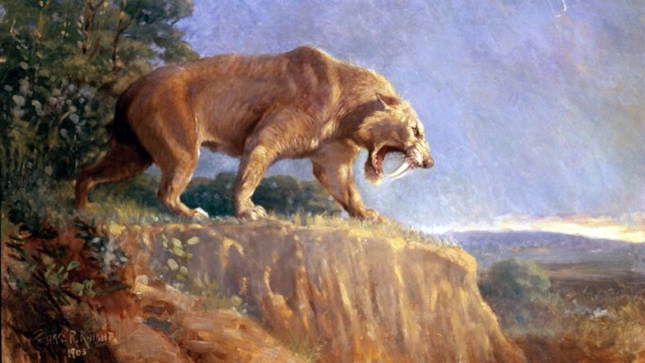
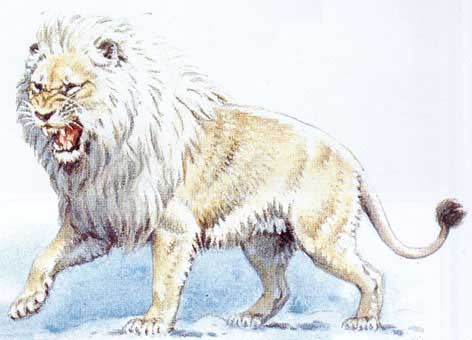
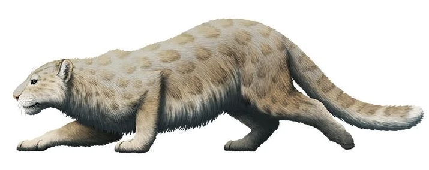

Felinos Extintos
A extinção de animais é o processo pelo qual uma espécie animal deixa de existir. Isso pode ocorrer devido a uma variedade de fatores, incluindo
mudanças climáticas, destruição de habitat, caça excessiva, poluição e introdução de espécies invasoras. A taxa de extinção atual de animais é
considerada muito alta devido às atividades humanas, e muitas espécies estão em risco de extinção. A conservação dos animais é um esforço importante
para evitar a extinção e proteger a biodiversidade.
Tigre-dente-de-sabre(Esmilodonte)

Era conhecido pelas suas grandes presas curvas e largas, que eram cerca de 2,5 vezes maiores do que as presas de um tigre atual.
Este felino pertencia á subfamilia Machairodontinae e viviu durante a época Pleistoceno.
Durante a sua vida estes felinos viveram na América do Sul e do Norte.
Foram extintos á 2,5 milhões de anos e a sua provável causa da sua extinção foi o extinção da megafauna pois os tigre-dente-de-sabre
eram especialistas em caçar herbívoros de grande porte e quando estes foram extintos, deixaram de ter alimento.
Leão-americano(Panthera leo atrox)

Ele era maior e mais musculoso do que o leão atual, e tinha uma cauda relativamente curta. Ele viveu principalmente na América do Norte,
mas também foi encontrado em outras partes do mundo, incluindo a América do Sul e a Europa. Era um carnívoro feroz e muito bem adaptado
para caçar grandes animais, como o bisonte americano e o mamute americano.
Era bem mais que o leão atual medindo cerca de 2.6 metros de comprimentos e 1,4 metros de altura nos ombros.
Foram extintos á 340 mil anos e a sua provável causa da sua extinção foi a extinção da
megafauna pois estes leões também eram especialistas em caçar herbívoros
e deixaram de ter alimento.
Pantera(Panthera blytheae)

Panthera blytheae é uma espécie extinta de felino descoberta em 2018, baseado em fósseis encontrados no sul da Califórnia. Os fósseis incluem
um crânio e uma mandíbula com presas. Os estudiosos estimam que essa espécie viveu há aproximadamente 4,9 a 4,3 milhões de anos atrás.
Panthera blytheae é considerado como o mais antigo gato conhecido, e é anterior ao gato atual Panthera leo, tigre e leopardo.
Ela era muito semelhante
aos gatos atuais, mas era mais pequena e provavelmente caçava presas menores do que os gatos atuais.
A descoberta desta espécie forneceu informações valiosas sobre a evolução dos gatos, e como eles se adaptaram e se espalharam pelo mundo.